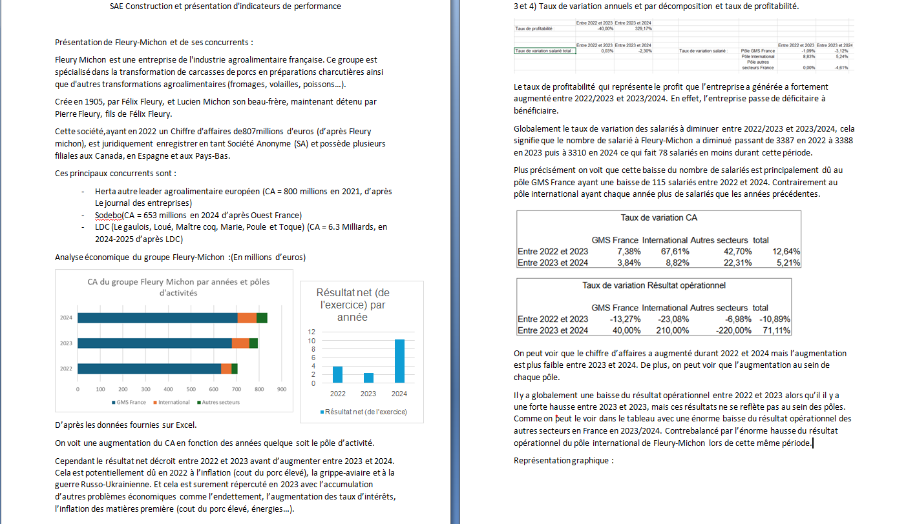
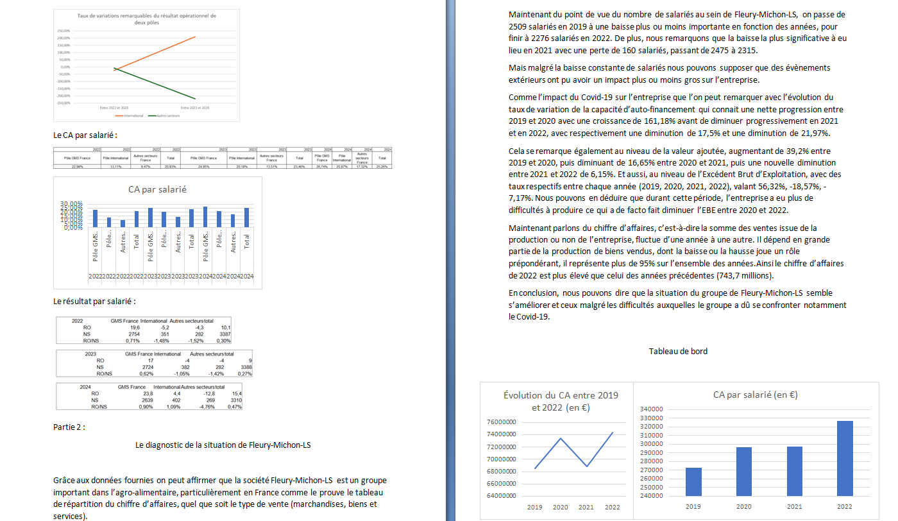
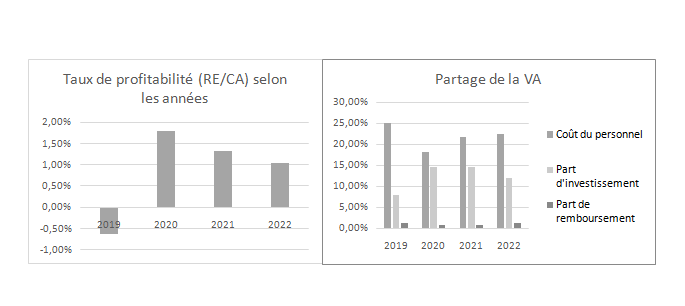

Pour cette SAÉ, avec Amélie BERTEN, nous devions analyser le bilan comptable de l'entreprise Fleury-Michon afin de supposer ce qui pourrait se passer pour cette dernière dans le futur.
L'analyse de l'entreprise s'appuyait sur des indicateurs de performance, comme la valeur ajoutée ou encore l'excédent brut d'exploitation. Cela permet une analyse globale, que ce soit sur les résultats de l'entreprise ou encore l'impact des salariés.
Pour ce travail, un rapport avec des graphiques devait être rendu, ainsi que des fichiers Excel à compléter, représentant le compte de résultat, le solde intermédiaire de gestion et les indicateurs de performance.